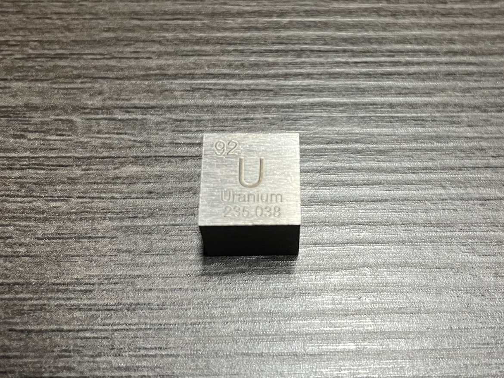

牛爱国卖了几十年的鞋，没想到家里还有破鞋
他两私奔了，你两在一起呗，跟谁过不是过[捂脸]
它……还没我学狗叫学得像呢[泪奔]
我以为哪个大爷在吆喝呢
找了一圈 才发现是狗在张嘴[泪奔]
为啥是乔氏太子爷啊
拒绝道德绑架，送花就走[玫瑰][玫瑰][玫瑰]
挖人家祖坟，拆人家房子的鄱阳县委书记。终于报应来了。
上饶市公安局局长
终于开始查江西了，婺源也要去查查！[玫瑰]
隔着屏幕都能觉得亏欠她[泪奔]

就喜欢刘惜君那个不死不活性冷淡的状态[看]
有一个剧本杀叫北国之春讲的就是切尔诺贝利核电站爆炸，最后的立意我真的难受的不行，这些牺牲的人很伟大，也很无奈。总要有人去做，总要有人牺牲，他们选择了牺牲自己
到后面就已经不是简单的救治了，已经是在实验了，一直吊着他，不让他死
最惋惜的是：切尔诺贝利消防员牺牲后，棺材也必须是铅和混凝土浇灌。他们永远不能入土为安[泣不成声]
路上看到金属千万不要捡，切记!!!
上班路上捡到的，寻思着这小铁块挺板正 
DNA不语，只是一味的断裂[流泪]
其实从他开始进医院开始，他就已经变成了研究对象，相当于小白鼠[黑脸]
等会，癌症是不断分裂细胞，核是细胞终止分裂
真正的布尔什维克主义者都留在了切尔诺贝利[泣不成声]
我记得之前听过一句说法，其实大内久在被辐射那一刻，就已经算是死了，唉
真的很不人道主义啊，活活受了83天的罪
第一批进入切尔诺贝利的消防员根本不知道是核反应堆爆炸[流泪]他们只是听了切尔诺贝利领导的话，去扑灭三号反应堆的火情[流泪]
把大内久当日本人整[捂脸]
切尔诺贝利事故的发生是人类的不幸，幸运的是它发生在一个伟大的国家！
[九转大肠]一说抵抗核辐射最大的战役，第一想到的一定是切尔诺贝利
人类群星闪耀时，集体的光辉太耀眼了[流泪]
感觉角色代入之后就不恐怖了，有时候复仇成功还挺燃
果然啊 代入鬼的视角根本不觉得害怕 我还觉得我鲨得不够狠[憨笑]
这个允熙也是间的没边了[憨笑]
这个看过解说 终于轮到我带入了[憨笑]
徐英给了允熙最长的时间去反悔，允熙一直到最后都不承认自己伤害了闺蜜，也捅了她，所以允熙死有余辜。徐英并不是因为男朋友出轨她才报复自己的闺蜜允熙，是因为她遭受三个混混凌辱后，还被自己的闺蜜写成小说，造她的黄谣。所以她给了允熙更长的时间。其他施暴者连忏悔的机会都没有直接被杀也是因为他们本身就有罪。
可是那个画家和他未婚妻没有报应[流泪]
徐英好漂亮[黑脸]完全忍不住不看她去看剧情[九转大肠]
这个徐英好漂亮[黑脸]
允熙真的很j啊啊啊啊
徐英痛苦了那么多年，还献祭了自己，那些坏人死得太轻松了[流泪]
虽然电影结尾的复仇挺解气，但被伤害之人却付出了生命的代价，直到生命的最后一刻，曾经身心受到的伤害依然清晰可见...所以这种复仇，依然是悲情的...在这里，神雕祝福大家永远平平安安，幸福安康，这辈子遇不到烂人。
朱允这个🗡️侽为什么要找小混混伤害徐英啊
我怎么又来这么早 听到第一句我鸡皮疙瘩都起来了 本来在床上坐的好好的 马上躺回去钻被窝了[流泪]
其实两个人就是有了间隙，外人愿意给他们小俩口机会走上升通道，不管给男的还是给女的，其中一个抓住就行了…可是谁都不愿意一直做那个无条件支持和相信对方的人[看]
永远记住夫妻不能在一个单位[感谢]而且千万别搞办公室恋爱。。。[感谢]
四个孩子保送上大学，是国家栋梁[赞][赞][赞]人品比学历重要
朱家俊输在紧张了，后面身体有点硬，本来上半场应该能拿下的，不说对面防守咋样，朱家俊打球真干净，还一直捡球！
预测下比分兄弟们[流泪]
因为女主的成功让爱情变成了她的一部分，因为男主的失败所以他的爱就显得更重因为他只有爱拿的出手，假设男主也很成功，两个人顶峰相见了，那爱就变得可有可无了
这小子...怎么做到的...又是阳光少年，又是沧桑中年[逞强落泪]
短剧已经癫成我不认识的样子了[捂脸][捂脸][捂脸]
这么抽象的短剧谁看啊[捂脸]
有幸在进藏路线上碰到一位摩旅的朋友，他就是格力公司珠海公司的研发设计人员，我问过他一句：格力的设计和研发理念是什么？ 他很认真的看着篝火说：满足董明珠的需求就是最好的设计
这次爆跌会不会迎来五一的微调
这个版本的马皇后不行、你去看一下剧雪那一版[发呆][发呆]
我觉得大吉故意的，她听到了，怕尴尬跑了
他的声音她肯定再熟悉不过了[流泪]
代大吉和周水都看到对方了，知道对方都在这个店里。可能不知道该怎么到招呼，双方都有点落荒而逃的感觉[流泪]
大吉停顿了，她知道了，她落荒而逃了
都是最好的结局[坏笑]
啊这不就是假装不见得那个感觉啊，男的端着锅等她打完电话，真上菜能不直接就上了吗？女的就是不想回头，这就是不想见面呗，一句话，你现实里认识的人，你都不用看正面，你就看他走两步，你都认出来了
Read more: